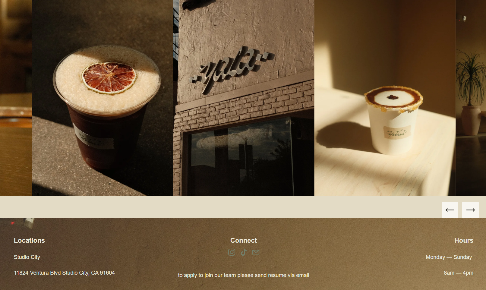
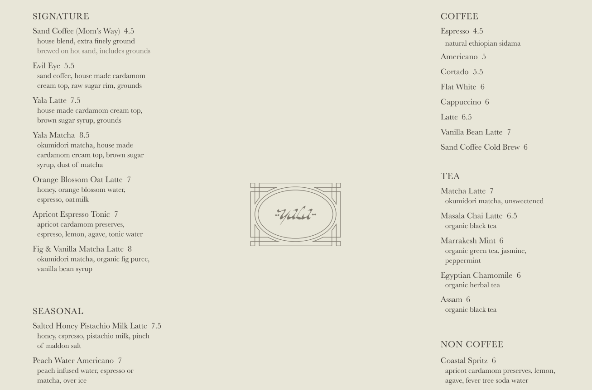
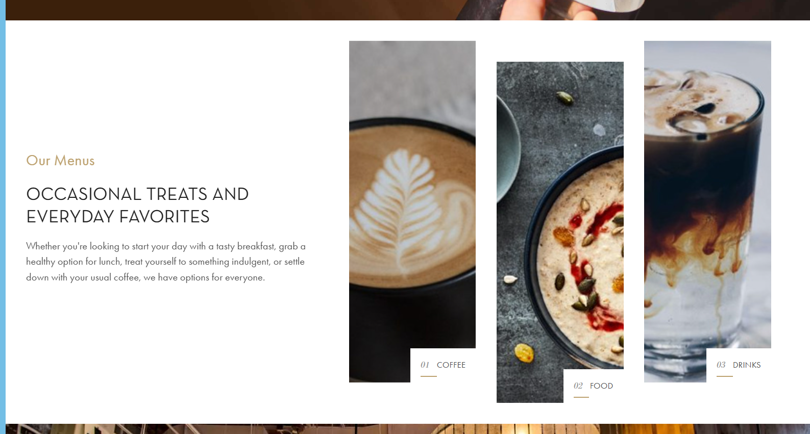
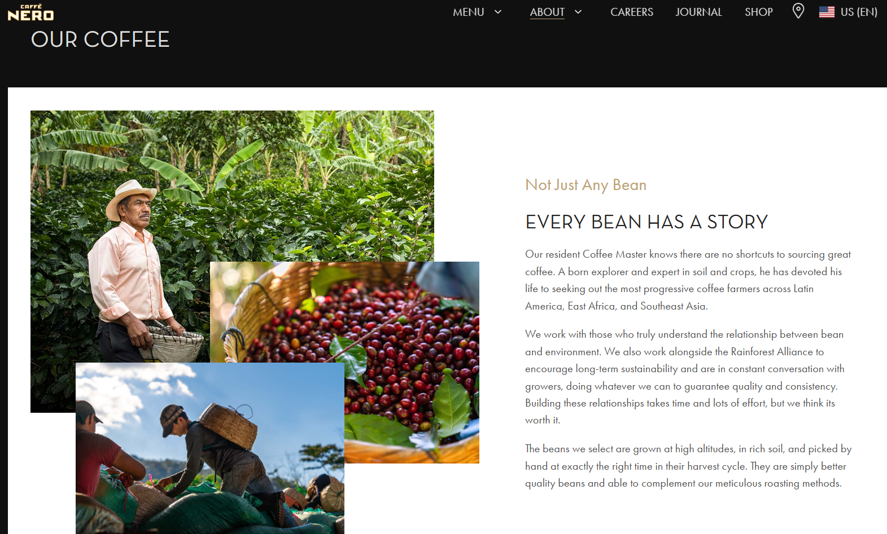
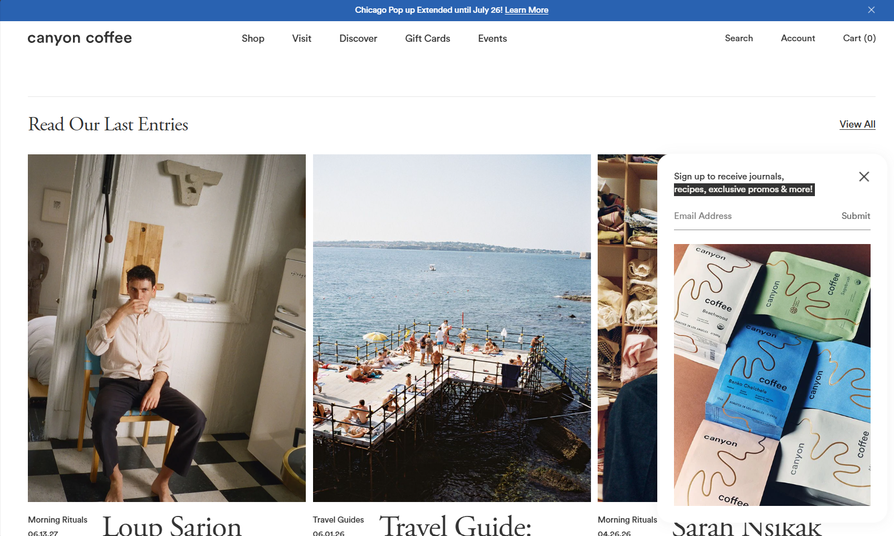
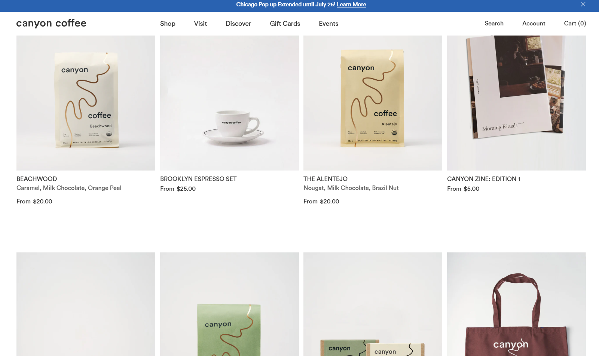

Starry Sky Coffee Roasters (Cafe)
A small coffee shop that provides a variety of drinks to it's customers. It has a celestial theme, which contributes to it's goal in helping customers acheive their wishes. Starry Sky intends to be a place where friends can gather late into the night and chat over a cup of coffee.
The people who use this site are people who stay up late into the night with their friends. They love to talk in ambient places and relax after a long day of work. They value nice presentation in their drinks and environments, making Starry Sky a perfect place for them to go.
People who use this site want to see what different kinds of coffee they can order, as well as what kinds of coffee beans they can buy to make Starry Sky's signature blend at home. Customers of Starry Sky want a place that fosters community and connection, and can look at the menu online when sitting at a table with friends, before they go to order.






Pouring signature coffee to customers at any hour, day or night.
[Starry Sky interior]
[coffee being poured]
Quick and poigniant, our double shot is sure to wake you up
$4.00
Classic Italian Coffee, made in a moka pot
$7.00
Thick and smooth, its the owner's favorite!
$6.75
Watered Down Espresso
$5.00
[purple iced tea in a glass]
An aromatic blend that is sure to relax even the most stressed person.
$6.00
A tangy drink
$6.50
We know you're performative
$7.50
Wow its so delicious!
$6.25
[Coffee being poured over an espresso machine]
Starry Sky started out as a food truck in the Seattle area. With locals coming by late at night for a cup of coffee and a look at the Elliot Bay, their support has led us to owning our very own business thats open to the public.
Come down late at night if you're ever feeling restless. If you need a cup of coffee, we got you! Feel free to talk amongst other customers, or make art in the lobby.
Come Visit Us.
827 Wall St, Seattle, WA 449 004 3423 cafe@starrysky.com[picture of customers inside restaurant]
Monday - Friday
7 a.m. - 11 p.m.
Saturday - Sunday
9 a.m. - 2 a.m.